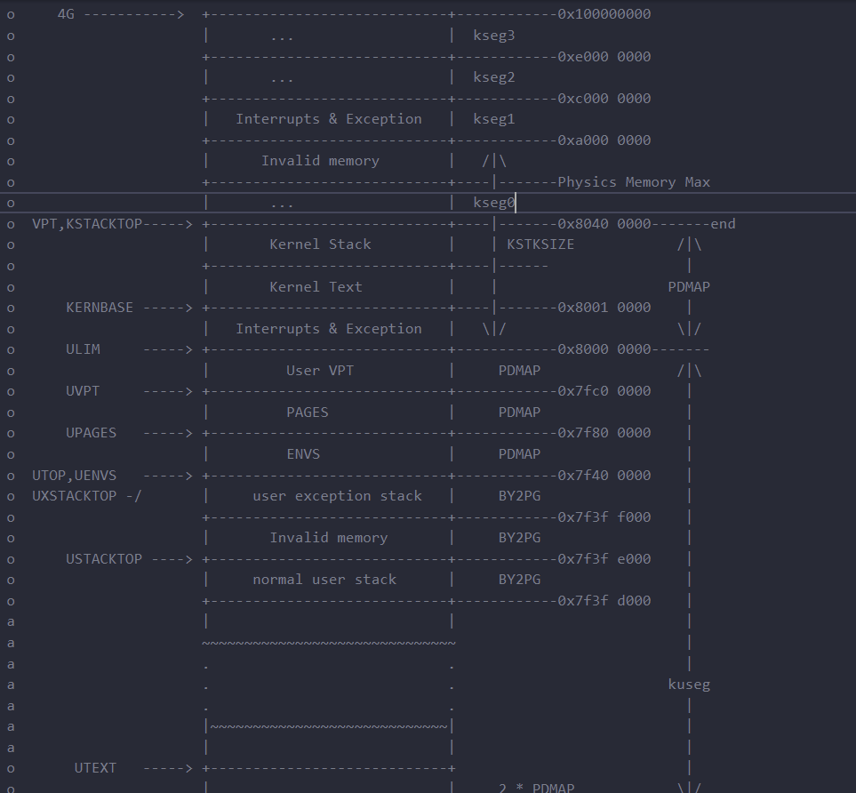

Lab4实验报告
思考题
4.1
- 内核保存现场时，将所有通用寄存器、CP0寄存器、当前PC值保存到栈里。但是，通用寄存器的值却非一成不变、完全保存。其中$k0，$k1，$v0的值被改变：$k0暂存$sp的值，$k1用于更新$sp的值，$v0用于存放非通用寄存器的值。而在MIPS中，$k0，$k1被定义为暂时的，随便使用的寄存器，vo则是用于存放函数的返回值，这三个寄存器的改写，对内核影响不大。从而，内核在保存现场的时候避免破坏了通用寄存器。
- 可以，系统调用核心部分(
syscall_*)执行前（用到$a0−$a3前）的过程中$a0−$a3寄存器的值没有被改变过，因此可以直接使用。 - 参数的传递依赖于a0-a3参数寄存器和栈。只要我们保证a0-a3参数寄存器不变，栈能够以原本的样子复制到内核栈空间中，就能够让sys开头的函数认为参数相同。
- 处理中，Trapframe中CP0_EPC增加了4，使得系统调用结束后用户态可以从发生系统调用的下一条指令开始执行。并将执行系统调用后的返回值存入了$v0寄存器，使得系统调用结束后用户态可以获得正确的系统调用返回值。
4.2
mkenvid函数中，在生成进程id时，先用一个静态变量表示第几次调用这个函数，再将其左移11位，再加上这个env块在envs数组中的偏移，得到这个进程块所对应的env_id。如此生成ID可以给每个进程一个独一无二的进程号，同时还可以方便的通过进程号找到进程块进而获得进程的全部信息。
4.3
- 说明子进程和父进程共享代码段且具有大致相同的状态和数据。
- 说明子进程开始运行时的大部分上下文状态与原进程相同，子进程在创建时保存了父进程的上下文、PC值等，状态与父进程一致。
4.4
- C
4.5
- UTOP以上的用户空间对于用户进程来说不可改变，是内核相关的页表；系统空间对于每个进程来说是相同且不可改变的，因此UTOP以上空间不用进行保护；
- UXSTACKTOP - BY2PG到UXSTACKTOP的空间是用户进程的异常栈，若进行写时复制保护可能陷入死循环，因此不能被保护。
- USTACKTOP到USTACKTOP + BY2PG的空间在空间分布图上是Invalid memory，用不到所以无需保护。
- 去除上述，需要保护的是在UTEXT与USTACKTOP之间且被使用的页面。
4.6
-
vpt中存放着二级页表数组，vpd中存放的是一级页表数组。其下标对应着第几个相应页表。对于虚拟地址va，(*vpt)[va >> 12]表示其对应的二级页表，(*vpt)[va >> 12]表示其对应的一级页表。 -
我们可以看到，定义
extern volatile Pte *vpt[]; extern volatile Pde *vpd[];在
entry.S中，有着如下代码.globl vpt vpt: .word UVPT .globl vpd vpd: .word (UVPT+(UVPT>>12)*4)vpt上存放的是UVPT(0x7fc00000),指向UVTP区域，也就是当前进程页表项所在的位置，变量类型为Pte数组。vpd上存放的是(UVPT+(UVPT>>12)*4),是自映射机制下的一级页表地址，变量类型是Pde数组。 -
(UVPT+(UVPT>>12)*4)是vpd指向的地址，很好地体现了自映射。 -
用户进程无权限修改页表项。
4.7
- 在用户发生写时复制引发的缺页中断并进行处理时，可能会再次发生缺页中断，从而“中断重入”。
- 我们在用户进程处理此缺页中断，因此用户进程需要读取Trapframe中的值；同时用户进程在中断结束恢复现场时也需要用到Trapframe中数据，因此存到用户空间。
4.8
- 将操作交与用户自己完成，简化了操作系统的复杂度，符合微内核设计理念
- 首先使用存放函数调用返回值的$v0,$v1寄存器恢复非通用寄存器，之后通过$sp恢复通用寄存器，最后恢复$sp，保证了恢复后不破坏通用寄存器。
4.9
- 在父进程调用
syscall_env_alloc过程中可能也需要进行缺页处理。 - 写时复制保护机制运行时，此时进程给__pgfault_handler变量赋值时就会触发缺页中断，但异常中断处理没有设置好，故无法进行正常处理。
- 不需要，子进程完全继承自父进程，复制了父进程中__pgfault_handler变量值。
实验难点图示
1.对于汇编语言的练习欠佳
- 对于寄存器的规则理解不够深入。在上学期计组的学习中，只使用了纯汇编编程，寄存器的使用由自己控制。这次存在C语言自动控制寄存器，因此要符合C语言对寄存器的使用规则。
- V0和V1会存储函数返回值；
- A0 - A3会存储函数传入值（剩余传值在栈里）
- S0 - S7在调用函数前后不变
- SP存放栈值
- RA存放返回地址
- K0,K1的使用
2.对于Trapframe中的寄存器对应不明确
- TF_EPC(sp)-EPC,TF_REG4(sp)-返回值，TF_REG4(sp) -系统调用号(msyscall第1个参数，存入a0)，TF_REG5、6、7(sp)-msyscall第2,3,4参数(存入a1,a2,a3)，TF_REG29(sp) -用户栈指针
3.具体函数的书写
首先注意的是我们书写的这些函数所用到的va大多需要在UTOP以下
-
handle_sys：
- 这里需要注意的是需要把epc值加四，再放回去，以便用户进入时正确跳转。
- 同时注意A0 - A3会存储函数传入值（剩余传值在栈里）
-
sys_yield():
- 注意首先要将KERNEL_SP复制到TIMESTACK再执行sched_yield()
-
duppage()：
-
取出权限位perm = (*vpt)[pn] & 0xfff;
-
根据不同的权限情况，选择映射时分配的权限位，其中PTE_R，PTE_COW映射时权限位需要有PTE_COW
static void duppage(u_int envid, u_int pn) { u_int addr; u_int perm; addr=pn*BY2PG; perm = (*vpt)[pn] & 0xfff; if(!(perm & PTE_R) || !(perm & PTE_V)) { syscall_mem_map(0,addr,envid,addr,perm); } else if(perm&PTE_LIBRARY) { syscall_mem_map(0,addr,envid,addr,perm); } else if(perm&PTE_COW) { syscall_mem_map(0, addr, envid, addr, perm); } else{ syscall_mem_map(0, addr, envid, addr, (perm|PTE_COW)); syscall_mem_map(0, addr, 0, addr, (perm|PTE_COW)); } // user_panic("duppage not implemented"); }
-
-
page_fault_handler(struct Trapframe *tf)
- 设置好异常处理栈以及epc寄存器的值：tf*->cp0_epc=curenv->env_pgfault_handler;
-
pgfault(u_int va)
- 在mmu.h中可以看到USTACKTOP开始的一段内存
Invalid memory还没有使用过，将tmp设置到USTACKTOP - 注意处理好映射关系

- 在mmu.h中可以看到USTACKTOP开始的一段内存
-
fork(void)
-
注意遍历父进程地址空间时，为了方便取出,用VPN(USTACKTOP)进行转换，同时注意对于(*vpd),需要i»10;
-
其他的按照提示即可
-
extern void __asm_pgfault_handler(void); int fork(void) { // Your code here. u_int newenvid; extern struct Env *envs; extern struct Env *env; u_int i; u_int envid; u_int parent_id = syscall_getenvid(); //The parent installs pgfault using set_pgfault_handler set_pgfault_handler(pgfault); //alloc a new alloc newenvid=syscall_env_alloc(); if(newenvid==0){ env=&envs[ENVX(syscall_getenvid())]; env -> env_parent_id = parent_id; return 0; } for( i = 0; i < VPN(USTACKTOP) ; i++ ) { if (((*vpd)[i >> 10] & PTE_V) && ((*vpt)[i] & PTE_V)) { duppage(newenvid, i); } } syscall_mem_alloc(newenvid, UXSTACKTOP - BY2PG, PTE_V | PTE_R); syscall_set_pgfault_handler(newenvid, __asm_pgfault_handler, UXSTACKTOP); syscall_set_env_status(newenvid, ENV_RUNNABLE); return newenvid; }
-
体会与感想
- 本次实验对于汇编代码有一定的要求，需要进行复习巩固
- 在本次实验中，难度较之前的实验有较大的提升，处理函数时需要综合lab1-3的很多知识，综合性很强。
- C语言帮忙我们干了很多事情，函数调用时对寄存器的保存以及传值、恢复等，写C时候完全不可见。但一和汇编对接起来，就会感受到高级语言的美好。
- 要完成的函数很多，第一次接触这个函数会觉得无从下手，同时也牵扯到用户态和内核态。Fork函数的整个流程也需要一定的时间才能理解。本实验细节也很多，需要细心